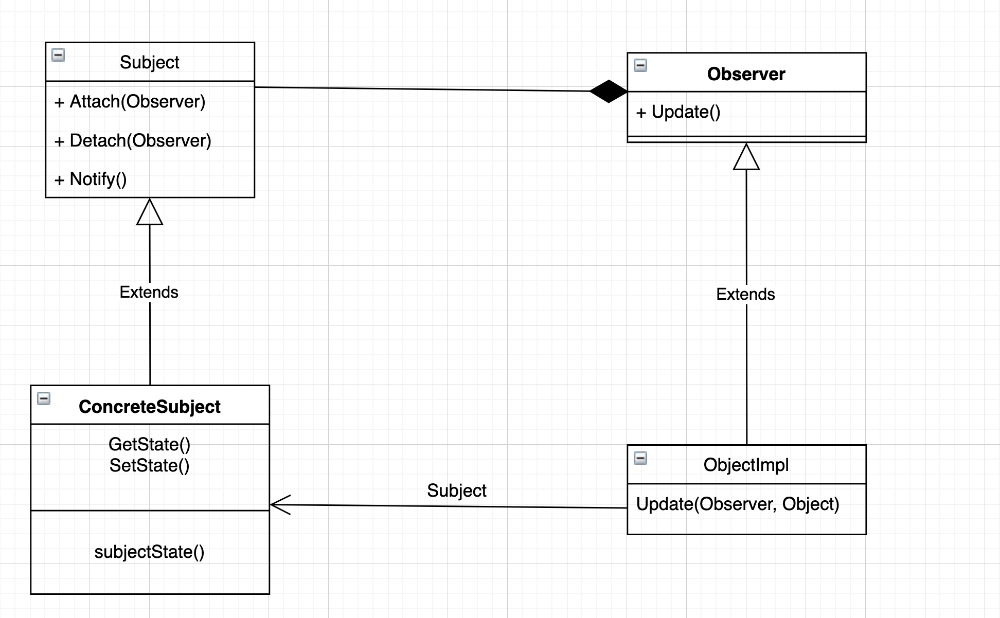

组件协作模式
多重继承
模式定义
- 定义对象间的一种一对多（变化）的依赖关系，以便当一个对象（Subject）的状态发生改变时，所有依赖于它的对象都得到通知并自动更新。
结构

- 
- Subject和Object是稳定的
- ConcreteSubject和ConcreteObserver
要点总结
使用面向对象的抽象，Observer 模式使得我们可以独立地改变目标与观察者，从而使二者之间的依赖关系达致松耦合。
目标发送通知时，无需指定观察者，通知（可以携带通知信息作
为参数）会自动传播。
观察者自己決定是否需要订阋通知，目标对象对此无所知。Observers 模式是基于事件的 UI 框架中非常常用的设计模式，也是
MVC 模式的一个重要组成部分。
code
package observer
import "fmt"
type Subject struct {
observers []Observer
context string
}
func NewSubject() *Subject {
return &Subject{
observers: make([]Observer, 0),
}
}
func (s *Subject) Attach(o Observer) {
s.observers = append(s.observers, o)
}
func (s *Subject) notify() {
for _, o := range s.observers {
o.Update(s)
}
}
func (s *Subject) UpdateContext(context string) {
s.context = context
s.notify()
}
type Observer interface {
Update(*Subject)
}
type Reader struct {
name string
}
func NewReader(name string) *Reader {
return &Reader{
name: name,
}
}
func (r *Reader) Update(s *Subject) {
fmt.Printf("%s receive %s\n", r.name, s.context)
}
package observer
func ExampleObserver() {
subject := NewSubject()
reader1 := NewReader("reader1")
reader2 := NewReader("reader2")
reader3 := NewReader("reader3")
subject.Attach(reader1)
subject.Attach(reader2)
subject.Attach(reader3)
subject.UpdateContext("observer mode")
// Output:
// reader1 receive observer mode
// reader2 receive observer mode
// reader3 receive observer mode
}
python_demo
from abc import ABCMeta, abstractmethod
class Subject(metaclass=ABCMeta):
@abstractmethod
def attach(self, observer):
pass
@abstractmethod
def notify(self):
pass
class Boss(Subject):
def __init__(self):
self.observers = []
self.action = ''
def attach(self, observer):
self.observers.append(observer)
def notify(self):
for val in self.observers:
val.update()
def set_section(self):
self.action = 'Boss is come back'
class IObject(metaclass=ABCMeta):
@abstractmethod
def update(self):
pass
def __init__(self, name, subject):
self.name, self.subject = name, subject
class StockObserver(IObject):
def update(self):
print('{} close stock and work {}'.format(self.name,
self.subject.action))
class NBAObserver(IObject):
def update(self):
print('{} close NBA and work {}'.format(self.name,
self.subject.action))
if __name__ == '__main__':
boss = Boss()
observer1 = StockObserver("Jim", boss)
observer2 = NBAObserver("Bob", boss)
boss.attach(observer1)
boss.attach(observer2)
boss.set_section()
boss.notify()
python_demo3
from abc import ABCMeta, abstractmethod
class Observable(object):
def __init__(self):
self.__observers = []
def add(self, observer):
self.__observers.append(observer)
def remove(self, observer):
self.__observers.remove(observer)
def notify(self, object=0):
for o in self.__observers:
o.update(self, object)
class WaterHeater(Observable):
def __init__(self):
super().__init__()
self.__temperature = 25
def get_temperature(self):
return self.__temperature
def set_temperature(self, temp):
self.__temperature = temp
print("current temperature is {} C".format(self.__temperature))
self.notify()
class Observer(metaclass=ABCMeta):
@abstractmethod
def update(self, observable, object=0):
pass
class WasingMode(Observer):
def update(self, observable, object=0):
if isinstance(observable, WaterHeater) and observable.get_temperature()\
>=50 and observable.get_temperature() <= 70:
print('water temperature is suit for bath')
class DrinkingMode(Observer):
def update(self, observable, object):
if isinstance(observable, WaterHeater) and observable.get_temperature()\
>= 100:
print('water temperature is suit for drink')
def test_water():
water = WaterHeater()
wash_mode = WasingMode()
drink_mode = DrinkingMode()
water.add(wash_mode)
water.add(drink_mode)
water.set_temperature(40)
water.set_temperature(60)
water.set_temperature(100)
#test_water()
class Account(Observable):
ip_region = {
"104.47.18.9": 'hangzhou',
'67.218.147.69': 'LA',
'33.12.33.123': 'shanghai'
}
def __init__(self):
super().__init__()
self.__ip = {}
self.__region = {}
def login(self, name, ip):
region = self.__get_region(ip)
if self.__is_long_distance(name, region):
self.notify({'name': name, 'ip':ip, 'region':region})
self.__region[name] = region
self.__ip = ip
def __get_region(self, ip):
region = Account.ip_region.get(ip)
return '' if region is None else region
def __is_long_distance(self, name, region):
latest_region = self.__region.get(name)
return latest_region is not None and latest_region != region
class SmsSender(Observer):
def update(self, observable, object):
print('msg send name {} region {} login ip {} '.format(
object['name'], object['region'], object['ip']))
class MailSender(Observer):
def update(self, observable, object):
print('mail send name {} region {} login ip {}'.format(
object['name'], object['region'], object['ip']
))
def test_region():
account = Account()
account.add(SmsSender())
account.add(MailSender())
account.login('Tony', '104.47.18.9')
account.login('Tony', '67.218.147.69')
account.login('Tony', '33.12.33.123')
test_region()
golang_demo
package desian_pattern_practise
type ISubject interface {
Attach(IObserver)
Detach(IObserver)
Notify()
}
type IObserver interface {
Update()
}
type Observer struct {
sub ISubject
}
type Subject struct {
observer map[IObserver]bool
temp float64
}
func (w *Subject) Attach(IObserver IObserver) {
w.observer[IObserver] = true
}
func (w *Subject) Detach(IObserver IObserver) {
delete(w.observer, IObserver)
}
func (w *Subject) Notify() {
for k, _ := range w.observer {
k.Update()
}
}
type WaterHeater struct {
*Subject
temp float64
}
func NewWaterHeater() *WaterHeater {
return &WaterHeater {
Subject: &Subject{
observer: make(map[IObserver]bool),
},
temp: 25.0,
}
}
func (w *WaterHeater) SetTemperature(temp float64) {
w.temp = temp
w.Notify()
}
type WashingMode struct {
*Observer
}
func NewWashingMode(sub ISubject) *WashingMode {
return &WashingMode{
Observer: &Observer{sub},
}
}
func (w *WashingMode) Update() {
if w.sub.(*WaterHeater).temp >= 50 && w.sub.(*WaterHeater).temp <= 70 {
println("Subject temperature is suitable for bath")
}
}
type DrinkingMode struct {
*Observer
}
func (w *DrinkingMode) Update() {
if w.sub.(*WaterHeater).temp >= 100 {
println("Subject temperature is suitable for drink")
}
}
func NewDrinkingMode(sub ISubject) *DrinkingMode {
return &DrinkingMode{
Observer: &Observer{sub},
}
}
var ip_region = map[string]string {
"104.47.18.9": "hangzhou",
"67.218.147.69": "LA",
"33.12.33.123": "shanghai",
}
type Account struct {
*Subject
ip string
region map[string]string
}
func (a *Account) Login(name, ip string) {
region, ok := ip_region[ip]
if !ok {
println("not in record")
return
}
if a.isLongDistance(name, region) {
a.region[name] = region
a.ip = ip
a.Notify()
return
}
a.region[name] = region
a.ip = ip
}
func NewAccount() *Account {
return &Account{
Subject: &Subject{
observer: make(map[IObserver]bool),
},
region: make(map[string]string),
}
}
func (a *Account) isLongDistance(name, region string) bool {
if val, ok := a.region[name]; ok {
return val != region
}
return false
}
type SmsSender struct {
*Observer
}
func (s *SmsSender) Update() {
ip := s.sub.(*Account).ip
var name, region string
for k, v := range s.sub.(*Account).region {
name, region = k, v
}
println("msg send name ", name, " ip ", ip, " region ", region)
}
func NewSmsSender(sub ISubject) *SmsSender {
return &SmsSender{
Observer: &Observer{sub},
}
}
type MailSender struct {
*Observer
}
func (s *MailSender) Update() {
ip := s.sub.(*Account).ip
var name, region string
for k, v := range s.sub.(*Account).region {
name, region = k, v
}
println("mail send name ", name, " ip ", ip, " region ", region)
}
func NewMailSender(sub ISubject) *MailSender {
return &MailSender{
Observer: &Observer{sub},
}
}
func TestDrinkingMode_Update(t *testing.T) {
water := NewWaterHeater()
washMode := NewWashingMode(water)
drinkingMode := NewDrinkingMode(water)
water.Attach(washMode)
water.Attach(drinkingMode)
water.SetTemperature(40)
water.SetTemperature(60)
water.SetTemperature(100)
}
func TestAccount(t *testing.T) {
account := NewAccount()
sms := NewSmsSender(account)
mail := NewMailSender(account)
account.Attach(sms)
account.Attach(mail)
account.Login("Tony", "104.47.18.9")
account.Login("Tony", "67.218.147.69")
account.Login("Tony", "33.12.33.123")
}
cpp_code
//
// Created by eredinliu on 2020-01-28.
//
#include <iostream>
#include <list>
#include <map>
using namespace std;
class Observable;
class Observer {
public:
virtual void Update(Observable*) = 0;
};
class Observable {
public:
std::list<Observer*> observers;
public:
void Add(Observer* obj) {
this->observers.push_back(obj);
}
void Remove(Observer* obj) {
this->observers.remove(obj);
}
void Notify() {
for (auto& it : this->observers) {
it->Update(this);
}
}
};
class WaterHeater : public Observable {
private:
float temperature = 25;
public:
float GetTemperature() {
return this->temperature;
}
void SetTemperature(float val) {
this->temperature = val;
this->Notify();
cout << " current temperatue " << this->temperature << " C" << endl;
}
};
class WashingMode : public Observer {
public:
void Update(Observable* obj) {
WaterHeater* waterHeater = reinterpret_cast<WaterHeater*>(obj);
if (waterHeater->GetTemperature() >= 50 &&
waterHeater->GetTemperature() <=70) {
cout << "temperature suitable for bath" << endl;
}
}
};
class DrinkingMode: public Observer {
public:
void Update(Observable* obj) {
WaterHeater* waterHeater = reinterpret_cast<WaterHeater*>(obj);
if (waterHeater->GetTemperature() >= 100) {
cout << "temperature suitable for drinking" << endl;
}
}
};
map<string, string> ip_region {
{"104.47.18.9", "hangzhou"},
{"67.218.147.69", "LA"},
{"33.12.33.123", "shanghai"}
};
class Account : public Observable {
public:
void Login(const string& name, const string& ip) {
if (ip_region.count(ip) <= 0) {
cout << "not in record" << endl;
return;
}
string region = ip_region[ip];
if (isLongDistance(name, region)) {
this->region[name] = region;
this->ip = ip;
this->Notify();
}
this->region[name] = region;
this->ip = ip;
}
bool isLongDistance(const string& name, string& region) {
if (this->region.count(name) > 0) {
return this->region[name] != region;
}
return false;
}
map<string, string> GetRegion(){
return this->region;
}
const string GetIP() {
return this->ip;
}
private:
map<string, string> region;
string ip;
};
class SmsSender : public Observer {
public:
void Update(Observable* obj) {
Account* account = reinterpret_cast<Account*>(obj);
auto ip = account->GetIP();
string name, region;
for (auto& it : account->GetRegion()) {
name, region = it.first, it.second;
}
cout << "msg send name " << name << " ip " << ip << " region" <<
region << endl;
}
};
class MailSender : public Observer {
public:
void Update(Observable* obj) {
Account* account = reinterpret_cast<Account*>(obj);
auto ip = account->GetIP();
string name, region;
for (auto& it : account->GetRegion()) {
name, region = it.first, it.second;
}
cout << "mail send name " << name << " ip " << ip << " region" <<
region << endl;
}
};
int main() {
WaterHeater* waterHeater = new WaterHeater();
Observer* washingMode = new WashingMode();
Observer* drinkingMode = new DrinkingMode();
waterHeater->Add(washingMode);
waterHeater->Add(drinkingMode);
waterHeater->SetTemperature(40);
waterHeater->SetTemperature(60);
waterHeater->SetTemperature(100);
waterHeater->Remove(drinkingMode);
waterHeater->SetTemperature(102);
Account* account = new Account();
Observer* sms = new SmsSender();
Observer* mail = new MailSender();
account->Add(sms);
account->Add(mail);
account->Login("Tony", "104.47.18.9");
account->Login("Tony", "67.218.147.69");
account->Remove(mail);
account->Login("Tony", "33.12.33.123");
}